Chapter5. Recurrent Neural Network¶
此章节很多概念和 NLP 中 RNN 章节 的内容重复，故部分内容不再赘述
5.1 One-hot code¶
用向量来表示单词
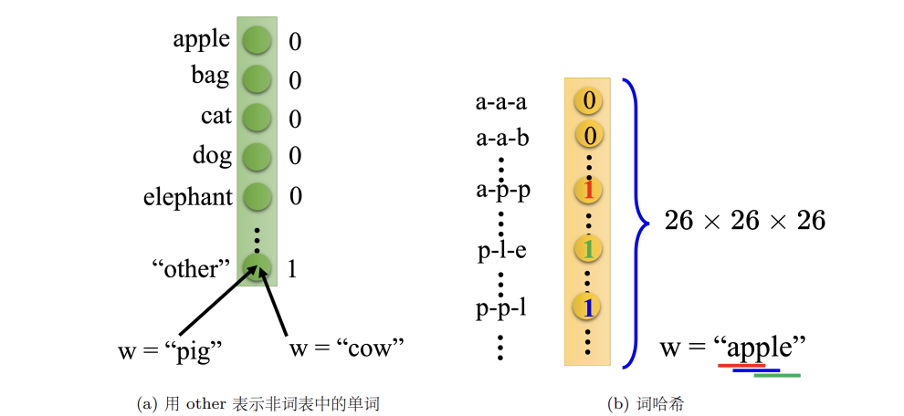
5.2 Structure of RNN¶
隐藏层的输出会被存到记忆元（memory cell），下一次输入时，神经元会考虑输入以及记忆元里的值（hidden state）。
- 当前时刻的隐状态使用与上一时刻隐状态相同的定义，所以隐状态的计算是循环的（recurrent），基于循环计算的隐状态神经网络被称为循环神经网络。
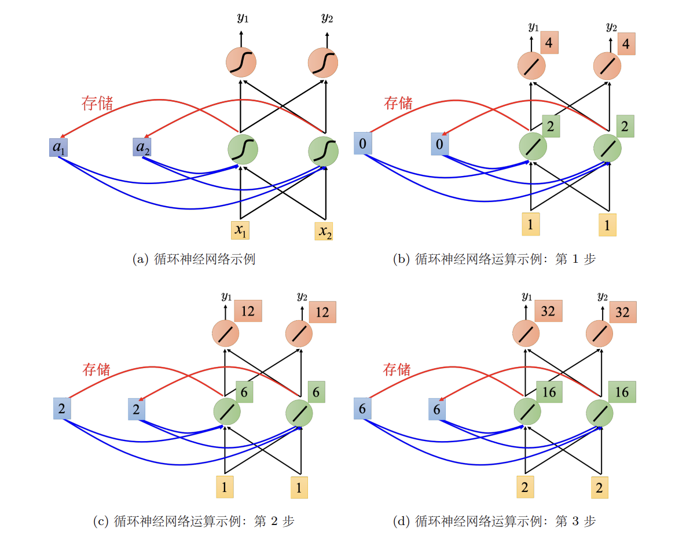
5.3 Other RNN¶
1. Elman Network & Jordan Network¶
- 机制：Jordan 网络反馈的是输出层值（作为下一时刻的输入存入记忆元），而 Elman 网络反馈的是隐藏层值。
- 可解释性：Elman 网络的隐藏层状态缺乏直接的目标约束，难以调控其学习内容；Jordan 网络因反馈源为有明确目标的输出层，使得记忆元存储的信息更具确定性和可解释性。
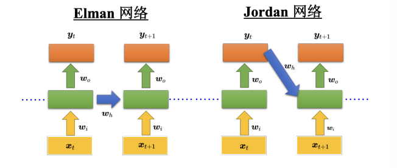
2. Bidirectional-RNN¶
Bi-RNN 由两个独立的 RNN 层组成，它们并行处理相同的输入序列：
- 正向隐藏层 (Forward Layer): 按照 \(x_1, x_2, \dots, x_n\) 的顺序读取，捕捉从过去到未来的上下文信息
- 逆向隐藏层 (Backward Layer): 按照 \(x_n, x_{n-1}, \dots, x_1\) 的顺序读取，捕捉从未来回到过去的上下文信息
- 输出层 (Output Layer): 在每一个时间步 \(t\)，系统将正向网络和逆向网络的隐藏层状态（Hidden States）同时输入到输出层，合并产生最终结果 \(y_t\)
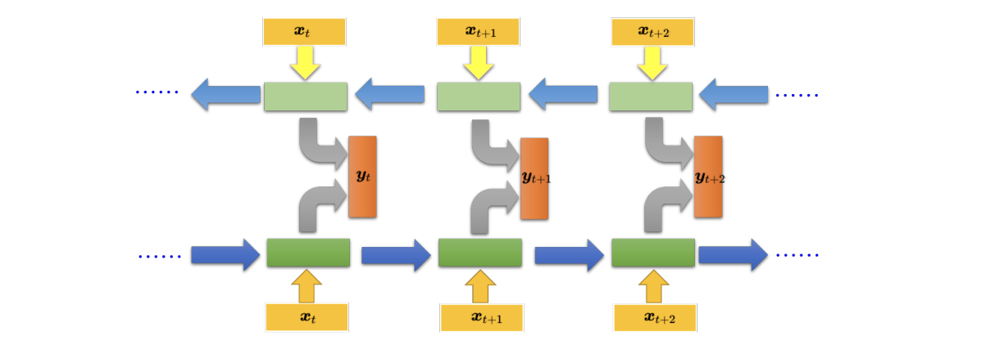
3. LSTM¶
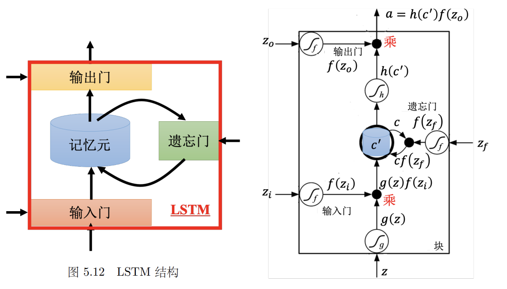
一个 LSTM 单元在每个时刻接收 4 个信号输入，最终产生 1 个输出 \(a\)：
- \(z\)： 想要写入记忆元的新信息（候选值）
- \(z_i\)： 控制输入门 (Input Gate) 的信号
- \(z_f\)： 控制遗忘门 (Forget Gate) 的信号
- \(z_o\)： 控制输出门 (Output Gate) 的信号
所有门的开关程度都由 Sigmoid 函数 \(f(\cdot)\) 决定，输出值在 \(0\) 到 \(1\) 之间：
- 1 代表完全打开（通过）；0 代表完全关闭（截断）
| 门控名称 | 对应信号 | 功能描述 | 直觉提醒 |
|---|---|---|---|
| 输入门 | \(f(z_i)\) | 决定当前时刻的新信息 \(g(z)\) 是否能写入记忆元。 | 控制“进” |
| 遗忘门 | \(f(z_f)\) | 决定记忆元中原有的值 \(c\) 是否保留。 | 1=保留，0=遗忘（与直觉相反） |
| 输出门 | \(f(z_o)\) | 决定更新后的记忆内容 \(c'\) 是否能输出到外界。 | 控制“出” |
| 数学运算流程 | |||
| 第一步 ：更新记忆元状态 \(c'\) | |||
| 记忆元的新状态由“新输入”和“旧记忆”加权相加得到： |
- \(g(z)\cdot f(z_i)\)：新信息 \(\times\) 输入门开关程度
- \(c\cdot f(z_f)\)：旧信息 \(\times\) 遗忘门保留程度
第二步：计算最终输出 \(a\)
将更新后的状态 \(c'\) 经过处理后，通过输出门：
- \(h(c')\)：对状态进行非线性变换
- \(f(z_o)\)：控制最终有多少信息能被“读”出来
LSTM 运算示例
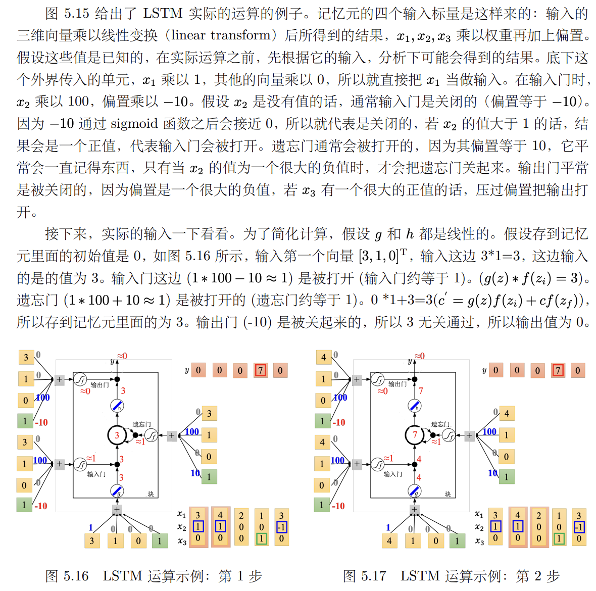
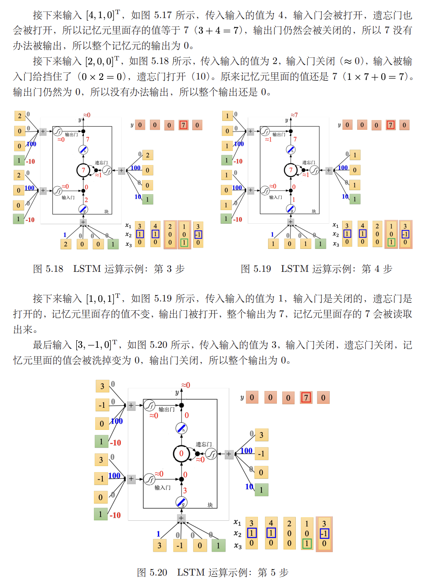
4. Principle of LSTM¶
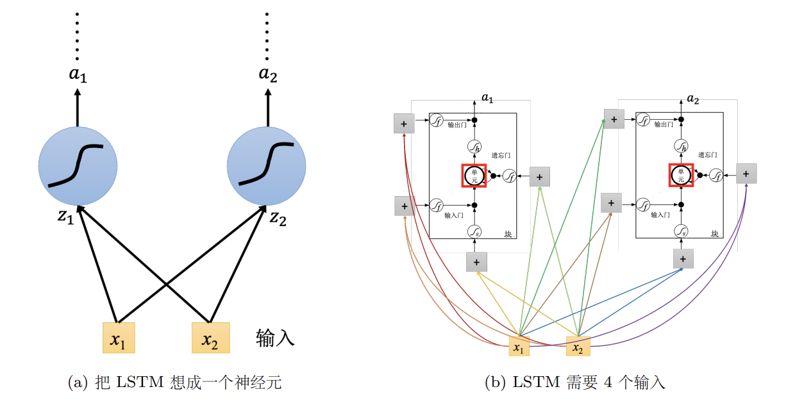
- 把 LSTM 当作一个神经元，将其替换原有的神经元即可
- 假设用的神经元的数量一样，LSTM 需要的参数量是一般神经网络的四倍
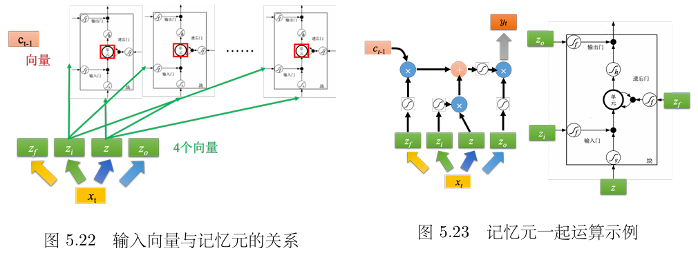
实际计算并不是一个一个处理 LSTM 单元，而是把整排 LSTM 看作一个向量
- 矩阵变换：输入向量 \(x_t\) 通过四个不同的线性变换（乘以四个矩阵），生成四个向量 \(z, z_i, z_f, z_o\)
- 维度对应：这些向量的每一个维度，分别对应到这一排 LSTM 中的某一个具体单元
- 公式表达（记忆元状态更新）：
这里所有的运算都是**按元素相乘**，这意味着同一层内的记忆元是同时更新的
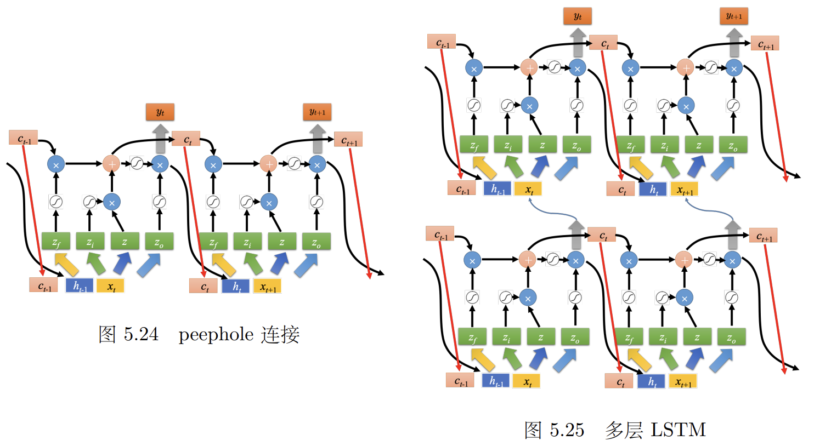
Peephole Connection：允许门直接查看记忆元内部的值 \(c\)
- 控制门的时候，同时参考 \(x_t\)（当前输入）、\(h_{t-1}\)（上一刻输出）和 \(c_{t-1}\)（旧记忆）
- 相当于把这三个向量拼在一起：\([x_t, h_{t-1}, c_{t-1}]\)，然后再进行矩阵运算
门控循环单元（Gated Recurrent Unit，GRU）是 LSTM 的简化版本，它只有两个门。其性能跟 LSTM 差不多，少了 1/3 的参数，不容易过拟合。
5.5 How RNN Learns¶
RNN is difficult to train
Loss Function¶
对于句子中的每一个单词（即每一个时间点 \(t\)），需要计算模型输出 \(y^t\) 与真实标签（参考向量）\(\hat{y}^t\) 之间的交叉熵（Cross-Entropy）
- 假设槽（Slot）的总数量为 \(N\)，公式如下：
- $\hat{y}_i^t$：真实标签在第 $i$ 个维度上的值（如果是“目的地”槽，则该维度为 1，其余为 0）
- $y_i^t$：模型预测该单词属于第 $i$ 个槽的概率
- RNN 当前的状态依赖于之前的输入，所以不能孤立地看待每个单词。我们需要将整个序列（长度为 \(T\)）中所有时间点的损失累加起来，最终得到 loss：
Gradient Descent¶
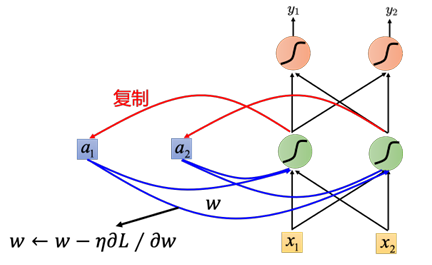
- 更新神经网络里的参数 \(w\)，就是计算关于 \(w\) 的偏导数，使用梯度下降（\(w \leftarrow \eta \frac{\partial{L}}{\partial{w}}\)）
- CNN为了计算方便，在反向传播的基础上采用了随时间反向传播（BackPropagation Through Time，BPTT）
RNN 的训练曲线往往剧烈抖动
- 当参数位于平坦区域时，梯度很小，你可能会调大学习率以加快进度。
- 但如果梯度瞬间暴增，巨大的梯度乘以较大的学习率，会让参数更新步长过大，导致模型训练崩溃
梯度裁剪 (Gradient Clipping)
- 原理：给梯度设置一个阈值
- 操作：如果计算出的梯度大于某个值（如 15），就强制让它等于 15。
5.6 Gradient Vanishing & Exploding¶
在普通的 RNN 中，每一时刻的记忆都会被新的输入完全覆盖或通过乘法不断累积
- 梯度消失：如果权重小于 1，经过多次乘法，梯度会迅速趋近于 0，导致模型无法学习长距离的依赖关系
- 梯度爆炸：反之，如果权重大于 1，梯度会瞬间膨胀，导致模型训练崩溃
LSTM 解决梯度消失的关键在于：从“乘法”变为了“加法”
- RNN：
- 旧记忆 $h_{t-1}$ 每次都要乘以权重 $W$，梯度在反向传播时也会连乘 $W$，极易消失。
- LSTM 的：引入Cell State：
关键是**加号（+）**，梯度的传递是通过加法路径流动的。只要**遗忘门（Forget Gate）** $f_t$ 保持开启（接近 1），旧的记忆就能几乎无损地传递下去。
Note
LSTM 不能直接解决梯度爆炸。由于 LSTM 的内部路径变得平滑，它的整体梯度可能会保持在较大的水平。因此，训练 LSTM 时通常需要：
- 更小的学习率
- 配合梯度裁剪（Gradient Clipping）
GRU 将 LSTM 的输入门和遗忘门合并为一个更新门。当它决定记住新的信息时，会自动清除旧的信息。
- 参数更少：训练速度快，不容易过拟合。
- 性能相近：在很多任务上，GRU 的表现与 LSTM 旗鼓相当。
单位矩阵（Identity Matrix）初始化 + ReLU
- 将 RNN 的转移权重 \(W\) 初始化为单位矩阵 \(I\)，那么在没有任何输入的情况下，\(h_t = h_{t-1}\)
- 这意味着梯度在反向传播时，乘以的是 1，梯度既不会消失也不会爆炸。
- 对比：
- 通常 RNN 用 Sigmoid/Tanh，因为它们能把值限制在一定范围，防止爆炸，但极易导致消失
- 配合单位矩阵初始化后，ReLU 性能会比较好
5.7 Other Applications¶
Many-to-One Sequence¶
关键术语抽取（key term extraction）
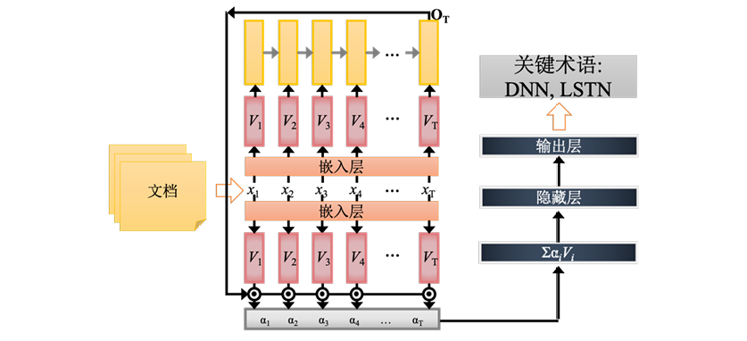
使用包含文档序列及其对应词级标签（Ground Truth）的数据集来训练模型
- 输入表示与特征嵌入
将文档序列作为输入，输入数据经过嵌入层处理，完成词嵌入 - 序列编码与上下文提取
嵌入向量序列被送入 RNN，在处理完整个文档序列后，提取最后一个时间步的隐藏层状态。该状态向量被视为整个输入序列的聚合表示，蕴含了文档的全局语义信息。 - 注意力机制与分类输出
经过注意力加权后的特征向量随后被送至前馈神经网络，最终通过输出层得到结果
Many-to-Many Sequence¶
语音识别（speech recognition）
一般处理声音信号的方式：每隔一小段时间选取一段声音信号，并用用向量表示。
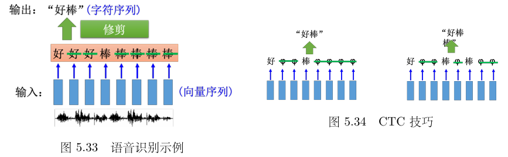
- 两个输入的时间间隔很小，会造成多个向量对应到同一个字符
- 识别结果为“好好好棒棒棒棒棒”
- 对结果采用修剪（trimming），即去重，最终得到“好棒”。但这样会有一个严重的问题，因为它没有识别“好棒棒”。
solution: CTC
引入占位符：Null（记作 \(\phi\) 或 Blank），作为“分隔符”和“填充物”
假设输入是一段音频，模型在每一个时间点都会给出一个概率分布。可以从中选出一条得分最高的路径。
- 原始路径： H H \(\phi\) I I I \(\phi\) S
- 第一步（去重）： H \(\phi\) I \(\phi\) S
- 第二步（去空）： H I S（删掉所有的 \(\phi\)）
最终得到的 HIS 就是识别结果。这种机制让模型不需要知道 "H" 具体是在第几毫秒结束的，它只需要在合适的时候“跳”出那个字符即可。
Sequence-to-Sequence¶
Seq2Seq 的核心架构分为两部分：
- 编码阶段 (Encoder)：
- RNN 读入整个输入序列（如“机器学习”）
- 关键点：在最后一个时间点，RNN 的记忆元 (Memory Cell) 或隐藏层向量会存储整个输入序列的“语义精髓”
- 解码阶段 (Decoder)：
- 从编码器的最终状态开始，机器逐个“吐出”字符
- 自回归属性：将当前时间点生成的字符作为下一个时间点的输入，循环往复，直到生成结束
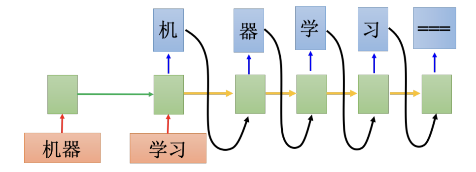
断句符号 (Stop Token)
为了防止机器无限制地生成字符，模型必须学会何时停止
- 方法：在词表中加入一个特殊的“断”符号（如
===或<EOS>）。 - 逻辑：如果模型预测下一个符号是“断”，则停止解码过程。这一机制通过训练数据自动习得。